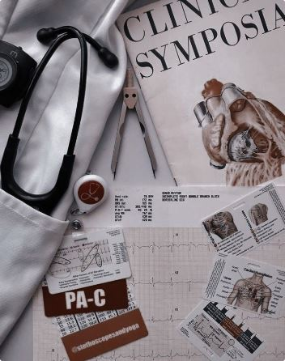

Estudiar medicina es una elección que va más allá de una simple carrera profesional. Es una vocación que permite a las personas contribuir de manera significativa a la salud y el bienestar de la sociedad. Los médicos juegan un papel crucial en la prevención, diagnóstico y tratamiento de enfermedades, mejorando así la calidad de vida de las personas y la esperanza de vida. Además, la investigación médica es esencial para el avance científico y el desarrollo de nuevos tratamientos. La medicina ofrece una amplia gama de especialidades, lo que permite a los médicos elegir un área de interés y desarrollar una carrera profesional gratificante y llena de desafíos.

¿Que relacion tiene con la programacion?
La medicina y la tecnología se han fusionado, transformando la atención sanitaria. Herramientas como la inteligencia artificial y la robótica permiten diagnósticos más precisos y tratamientos menos invasivos. La genética y la impresión 3D abren nuevas vías para tratar enfermedades y regenerar tejidos. Dispositivos wearables y aplicaciones móviles empoderan a los pacientes, mientras que la investigación se acelera gracias a la gran cantidad de datos disponibles. Esta alianza promete un futuro en el que la prevención, el diagnóstico y el tratamiento de enfermedades serán más efectivos y personalizados.
La investigación médica también se ha visto impulsada por la tecnología. Los grandes datos, la computación en la nube y la inteligencia artificial permiten analizar grandes volúmenes de información genética y clínica, lo que acelera el descubrimiento de nuevos fármacos y tratamientos. Además, la realidad virtual y aumentada se utilizan cada vez más para la formación de profesionales de la salud y para simular procedimientos quirúrgicos.